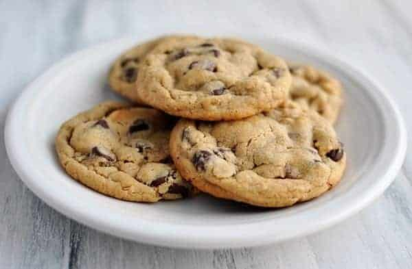

Chocolate Chip Cookies
Home

The Best Cookies
This is, by far, the best chocolate chip cookie recipe I've ever made. Everyone loves them, even those who claim they "don't like cookies".
The base cookie recipe is fantastic to use with other add-ins, such as M&Ms, butterscotch chips, white chocolate chips, and any other candy you might find in the baking aisle.
I originally made these cookies to give away to friends, but my significant other tried them and immediatly laid claim to the entire batch and all future cookies from our kitchen. He said, "I'm not sharing my cookies! They can have the Oreos..."
Ingredients
- 1 cup unsalted butter, softened
- 4 oz cream cheese, softened
- 1 1/2 cups brown sugar, packed
- 1/2 cup granulated sugar
- 2 large eggs
- 4 1/2 cups all-purpose flour
- 1 Tbsp + 1 tsp corn starch
- 2 tsp baking soda
- 1/2 tsp salt
- 2 cups chocolate chips
Instructions
- In a large mixing bowl, add butter and cream cheese. With an electric hand mixer, or a stand mixer, mix until well creamed; 3-5 minutes (This is your wet mix)
- Add brown sugar and granulated sugar and mix until light and fluffy.
- Add two eggs and mix until eggs are incorporated.
- Scrape down the sides of bowl.
- In a separate bowl, combine flour, corn starch, baking soda, and salt.
- Add dry ingredients into the went mixture, thoroughly mix.*
- Mix in chocolate chips.
- Refrigerate dough for at least 1 hour*, up to 5 days.
- Preheat oven to 350°F.
- On a parchment-lined baking sheet, place cookie dough balls two inches apart.
- Bake for 8-10 minutes. Let rest on cookie sheet for 5 minutes before transferring to a cooling rack.
Notes*
- I find it easiest to mix the dry ingredients by hand in place of an electric mixer so I don't end up in a flour dust cloud.
- This step can be skipped, however, the cookies will spread and end up thin and flat.